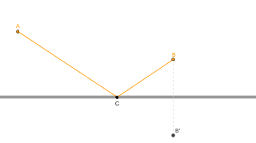

Trigonometria e Raios Luminosos

Encontrando o Princípio de Fermat
O Princípio de Fermat diz que a trajetória da luz entre dois pontos sempre será aquela que minimiza o tempo total de deslocamento entre tais pontos.
Instruções
A ferramenta ao lado simula o deslocamento da luz entre os pontos A e B. Observe que, para chegar em B, a luz reflete na superfície indicada.
Você pode mover o ponto C, para alterar a trajetória da luz.
No canto superior direito da ferramenta, está indicada a distância total percorrida pelo raio luminoso.
Como a velocidade da luz não muda ao longo do trajeto, para minimizar o tempo basta minimizar a distância percorrida. É o que você fará nas questões a seguir.
Se você aumentar muito a precisão das medidas da ferramente ao lado, notará que a menor trajetória é aquela em que o ângulo de incidência e de reflexão são iguais. É exatamente isso que se observa no mundo real quando algum objeto reflete em uma superfície.
Responder no caderno
-
Questão 1
-
A
Na imagem abaixo, o ponto B' corresponde à reflexão do ponto B na reta que representa uma superfície refletora. Mostre que, para que a distância percorrida pelo raio luminoso passando pelos pontos A, C e B seja mínima, A, C e B' devem estar alinhados. 
-
A